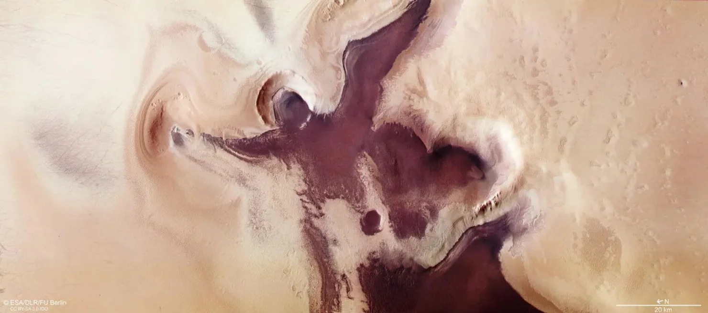

MARS ARCHIVE
Централізований архів даних планети Марс для місії "ARES"
GENERAL_INFO
GENERAL_INFO
PLANETARY_RECORDS
GENERAL_INFO
H2O_ANALYSIS
GENERAL_INFO
WEATHER_REPORT
GENERAL_INFO
MISSION_LOGS
GENERAL_INFO
ANOMALIES
GENERAL_INFO
GRAVITY_WELL
Гравітація на Марсі складає лише 38% від земної. Це означає, що людина може стрибати значно вище, а вантажі переносити легше.
GENERAL_INFO
X-FILES: Anomalous Discoveries
DATABASE_PATH: /ROOT/ARCHIVE/UNEXPLAINED_SIGNS/

"Портал" у скелі Гетьман
Геологічна структура, що спричинила світовий ажіотаж. Хоча на знімку об'єкт виглядає як вхід для гуманоїда, лазерне сканування підтвердило: це **ерозійний розлом**. Прямокутна форма — результат ідеального кута падіння тіні на природні шари пісковика.
GENERAL_INFO

Шлейф гори Арсія
Гігантський "дим", що тягнеться на 1500 км від згаслого вулкана. Попри вулканічний вигляд, це **орографічна хмара**. Вона виникає, коли вологі маси повітря стикаються з підніжжям гори та замерзають у високих шарах атмосфери, утворюючи крижаний слід.
GENERAL_INFO

Полярний "Охоронець"
Містична постать на південному полюсі. Аналіз показує, що "голова" ангела — це стародавній **ударний кратер**, а темний колір фігури обумовлений сумішшю піску та льоду, що оголилися під час сублімації (випаровування) замороженого діоксиду вуглецю.
GENERAL_INFO

Обличчя регіону Сідонія
Легенда космічної ери. Світова сенсація 1976 року виявилася лице **мезою** (столовою горою). Завдяки новітнім камерам ми знаємо: очі та рот — це просто пагорби та западини, які при низькому сонці створюють ілюзію людських рис.
GENERAL_INFO
CHRONOLOGY OF MARS EXPLORATION
SCANNING HISTORICAL DATA...
Перші очі людства
21 знімок, що розвіяв міфи про канали та цивілізації. Ми побачили мертву, вкриту кратерами пустелю, схожу на Місяць.
GENERAL_INFO
Mariner 9: Масштаб
Перший апарат на орбіті. Саме він відкрив **Valles Marineris** (велетенський каньйон) та вулкан **Олімп**, коли пил нарешті влігся.
GENERAL_INFO
Viking 1: Десант
Перша тривала робота на поверхні. Світ побачив перші панорами іржавих скель та рожевого марсіанського неба.
GENERAL_INFO
Епоха марсоходів
Від "мікрохвильовки" **Sojourner** до гіганта **Curiosity**. Доведено: Марс мав рідку воду, стабільні озера та органіку.
GENERAL_INFO
Perseverance & Ingenuity
Збір ґрунту для повернення на Землю та перші польоти гвинтокрила. Ми вчимося жити та працювати на іншій планеті.
GENERAL_INFO
NATURAL_SATELLITES_SCAN
PHOBOS
"Страх" // Об'єкт приреченийФорма: "Космічна картопля" 🥔. Нерівний, пухкий об'єкт, вкритий борознами.
Аномалія: Найближчий супутник у Сонячній системі. Сходить і заходить двічі на добу.
Кратер Стікні: Займає майже половину поверхні. Удар ледве не розколов супутник.
GENERAL_INFO
DEIMOS
"Жах" // Стабільна орбітаФорма: Гладкий та округлий. Вкритий товстим шаром пилу (реголіту), що приховує кратери.
Вид з Марса: Виглядає як дуже яскрава зірка. Рухається по небу повільно (30 годин).
Походження: Ймовірно, колишній астероїд, захоплений гравітацією Марса мільярди років тому.
GENERAL_INFO
[GRAVITY_CALC]
Скільки ти важитимеш на Марсі?
[MISSION_MARS_2030]
Наступний крок — висадка людини.
Мета: Створення автономної колонії.
Транспорт: Starship (SpaceX) або SLS (NASA).